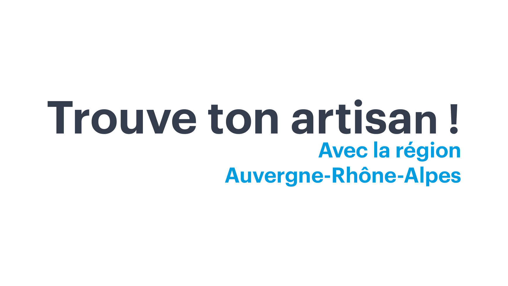

<header class="shadow-md p-4 md:p-6 flex flex-col md:flex-row md:justify-between md:items-center relative" role="banner">
  <!-- Logo -->
  <div class="flex justify-between items-center w-full md:w-auto">
    <a routerLink="/" aria-label="Accueil">
      
    </a>

    <!-- Icônes mobile -->
    <div class="md:hidden flex items-center space-x-3 text-[var(--color-primary)] ">
      <!-- Bouton recherche -->
      <button (click)="toggleSearch()" 
              [attr.aria-expanded]="isSearchOpen"
              aria-label="Ouvrir la recherche"
              class="p-2 focus:outline-none focus:ring-2 focus:ring-offset-2 focus:ring-[var(--color-primary)]">
        <span class="sr-only">Rechercher</span>

        <!-- loupe -->
        <svg xmlns="http://www.w3.org/2000/svg"
            class="w-5 h-5 text-[var(--color-primary)]"
            fill="none"
            stroke="currentColor"
            stroke-width="2"
            viewBox="0 0 24 24"
            aria-hidden="true">
          <path stroke-linecap="round" stroke-linejoin="round" d="M21 21l-4.35-4.35M10 18a8 8 0 100-16 8 8 0 000 16z"/>
        </svg>
      </button>

      <!-- Bouton menu -->
      <button (click)="toggleMenu()" 
              [attr.aria-expanded]="isMenuOpen" 
              aria-controls="menu-mobile" 
              aria-label="Menu principal"
              class="p-2 focus:outline-none focus:ring-2 focus:ring-offset-2 focus:ring-[#0074C7]">
        <ng-container *ngIf="!isMenuOpen; else closeIcon">
          <div class="flex flex-col items-end space-y-[4px]">
            <span class="block h-0.5 w-4 bg-[var(--color-primary)]"></span>
            <span class="block h-0.5 w-6 bg-[var(--color-primary)]"></span>
            <span class="block h-0.5 w-6 bg-[var(--color-primary)]"></span>
          </div>
          <span>MENU</span>
        </ng-container>
        <ng-template #closeIcon>
          <span class="text-2xl font-bold">X</span>
        </ng-template>
      </button>
    </div>
  </div>

  <!-- Desktop : recherche + menu -->
  <div class="hidden md:flex flex-col items-center ml-6 w-full max-w-[600px]">
    <app-search-bar (searchChanged)="onSearchChanged($event)" class="w-full mb-2"></app-search-bar>
    <nav class="flex w-full items-center justify-between" aria-label="Menu principal">
      <a routerLink="/categorie/batiment" class="hover:underline">Bâtiment</a>
      <a routerLink="/categorie/services" class="hover:underline">Services</a>
      <a routerLink="/categorie/fabrication" class="hover:underline">Fabrication</a>
      <a routerLink="/categorie/alimentation" class="hover:underline">Alimentation</a>
    </nav>
  </div>

  <!-- Mobile : recherche -->
  <div *ngIf="isSearchOpen" class="mt-3 md:hidden">
    <app-search-bar (searchChanged)="onSearchChanged($event)"></app-search-bar>
  </div>

  <!-- Mobile : menu -->
  <nav *ngIf="isMenuOpen" id="menu-mobile" class="flex flex-col mt-3 space-y-2 text-sm sm:text-base md:hidden" aria-label="Menu principal mobile">
    <a routerLink="/categorie/batiment" class="focus:underline">Bâtiment</a>
    <a routerLink="/categorie/services" class="focus:underline">Services</a>
    <a routerLink="/categorie/fabrication" class="focus:underline">Fabrication</a>
    <a routerLink="/categorie/alimentation" class="focus:underline">Alimentation</a>
  </nav>
</header>
